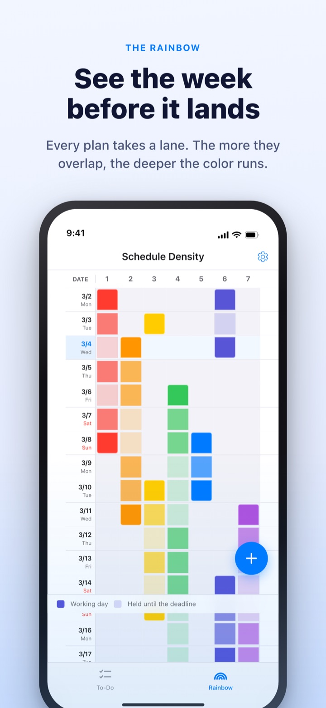
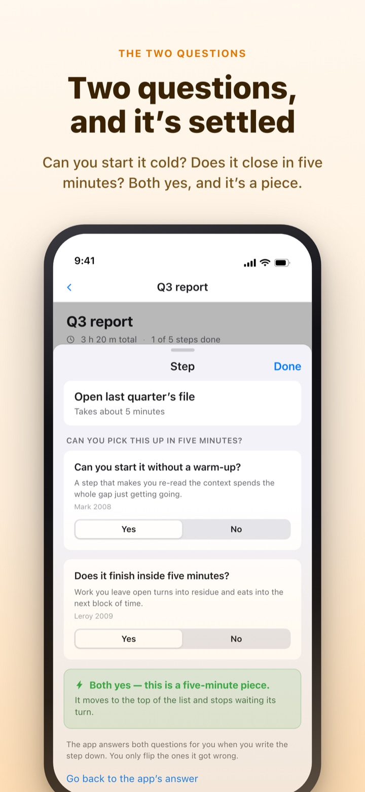
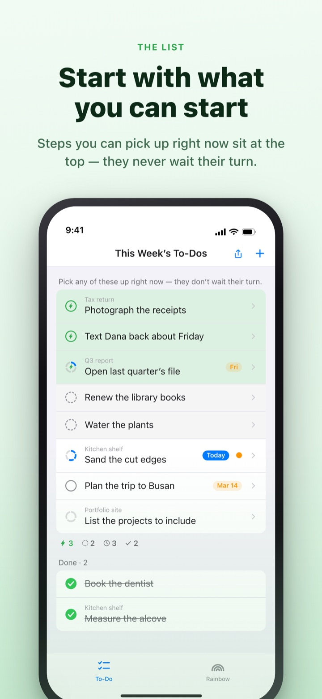
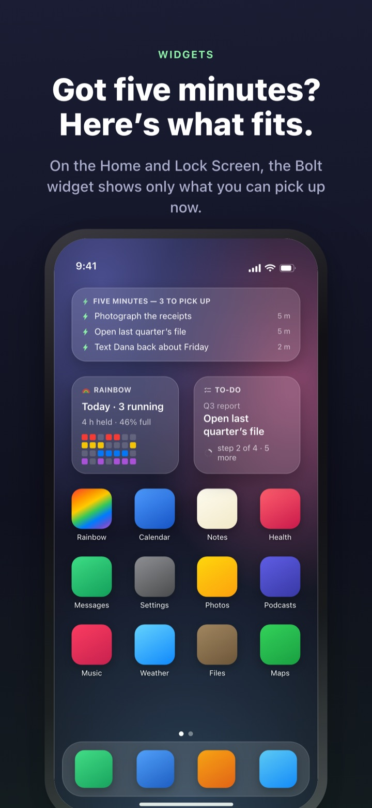

See the heavy week coming.
Use the five minutes you get.
The more your work overlaps, the deeper the rainbow gets. Break a big job into steps, and the one you can grab in a spare moment is already waiting at the top.
The Rainbow, task breakdown, the timer and syncing with the Mac are free.

Sort it yourself
“Q3 report” is already split into five steps. Pick a step, change its time or flip an answer. Only a step that gets a yes to both questions becomes a fragment you can grab in five minutes.
Ever had a week that looked empty on the calendar and still left you gasping?
A calendar tells you whether something is scheduled, not how much is piled on top of it. You find out three deadlines landed in the same week only once you're in it, and the five minutes you get in between go to rereading the to-do list. Rainbow of Desire draws your week as a grid, shades it darker where work overlaps, and sets aside the steps that fit a gap.
Two questions settle it
Split a big job into steps and each one gets two questions. Can you start it cold? Does it run all the way through in five minutes?
Only a yes to both makes it a fragment. The app answers first from the words and time you wrote, and you only flip an answer when it's wrong.

When a gap opens, look at the top
Swipe a to-do to the right to add a Bolt, and it skips the line to stand at the top. No reading the whole list to find something to do.
Decide once per group whether steps wait for each other. In order puts the first unfinished step up front; Any order puts whatever fragment you could grab right now.

Visible without opening the app
The timer counts down to the moment an event ends, and the time left shows in the Dynamic Island and on the Lock Screen.
Home and Lock Screen widgets show the job you're on, what fits five minutes, and this week's rainbow. (Widgets are Pro.)

Three steps to start
- 1
Draw an event
Press and hold an empty cell on the start day, tap the end day, and a line appears on the rainbow.
- 2
Split the big jobs
Tap a to-do, list its steps and pick a time for each. The app answers the two questions for you.
- 3
Look at the top
Fragments and bolted rows gather at the top, no waiting their turn.
What you'll see on screen
- Dark cell · pale cell
- a day you actually work on it, and the rest of its span until it ends
- A full row
- a day juggling so much that one slip pushes the whole day
- Fragment
- yes to both questions; grab it when five minutes open up
- Short block
- starts cold but won't finish in a fragment; one sitting does it
- Block
- needs a warm-up or runs 45 minutes or more; give it time you've set aside
- Bolt
- your own “ready right now” mark; it jumps to the top
- In order · Any order
- whether steps wait for each other, set once per group
- Ledger
- the week's tally: what's left over, time won back, and recovery, kept apart
Time adds up from the bottom: a job's time is the sum of its steps.
What you need to live today is free
Free
- The Rainbow density grid
- Splitting tasks into steps, and the two questions
- Bolt and step order
- Timer, in the Dynamic Island and on the Lock Screen
- Syncing with Rainbow Craft on the Mac over iCloud
- The last two weeks of the Ledger
Rainbow Plus · Rainbow Pro
- Plus: event stats, and the Ledger past two weeks
- Pro: everything in Plus, plus Home and Lock Screen widgets
- Pro: import from Calendar and mirror it
- Pro: share your events, read only
- Pro: unlocks Rainbow Craft Pro on the Mac too
Each as a yearly subscription or a one-time lifetime purchase
You only pay for looking back over past weeks and taking things beyond the app. If you bought Pro earlier or still have a monthly plan, you're Pro today.
Questions
Do I need an account or iCloud?
Not on your own. There's no sign-up and everything stays on your device. To see it on another device or the Mac app, or to share, sign in to iCloud.
The app answered a question wrong.
Tap the step and switch Yes or No. Your own answer always beats the app's call. Tap Back to the app's call to hand it back. A step with no time set isn't counted as a fragment, because the app can't tell whether it finishes in five minutes.
Can I share with someone?
Send an invite link to share your events read only (Pro), or open one to-do list that you and the people you invite read and write together. Anyone with the link can join, so only send it to people you mean to. It has nothing to do with Apple Family Sharing.
Does it show my Calendar events?
Events from the calendars you pick appear on the rainbow and in your day view (Pro). It only reads them and never writes anything back.
Can I check things off from a widget?
Widgets are view only. Tap one to jump straight to your to-dos and check it off there.
Do I have to buy the Mac app separately?
Rainbow Craft is a separate macOS app on the Mac App Store. On the same iCloud account, to-dos and weekly plans sync on their own, and syncing costs nothing.
Are my older to-dos still there?
Yes. To-dos, steps and the times you set are all kept. Labels from the old start conditions are sorted again by the two questions.
Where is my data stored?
There's no server. It stays on your device and in your own private iCloud, where the developer can't see it. No advertising identifiers, no location. The app sends anonymous usage statistics that can't identify you, and you can turn them off in Settings.
How do I cancel a subscription?
In Settings > Apple Account > Subscriptions. It renews at the same price unless you cancel at least 24 hours before the period ends. Lifetime is a single charge.
Stuck, or something looks off? Write to leeo@kakao.com. You'll also find a contact option in the app's Settings.